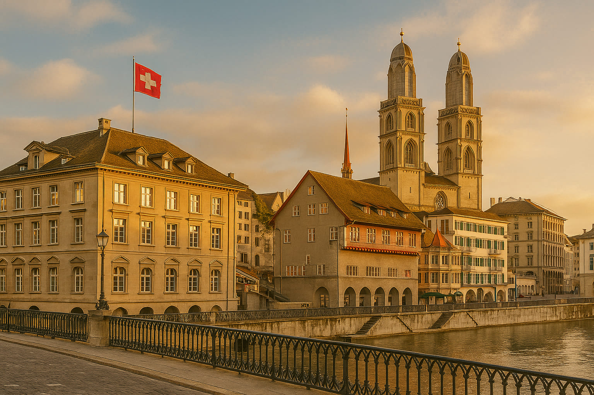
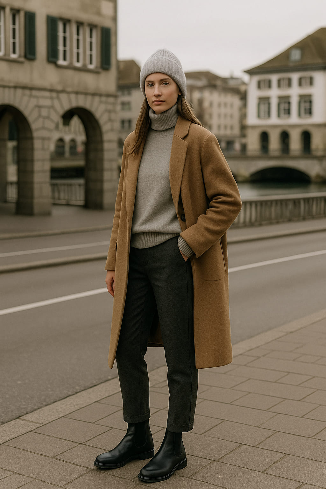
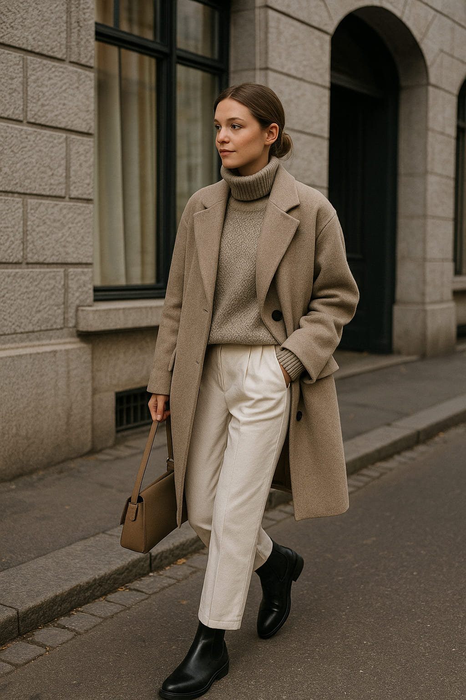
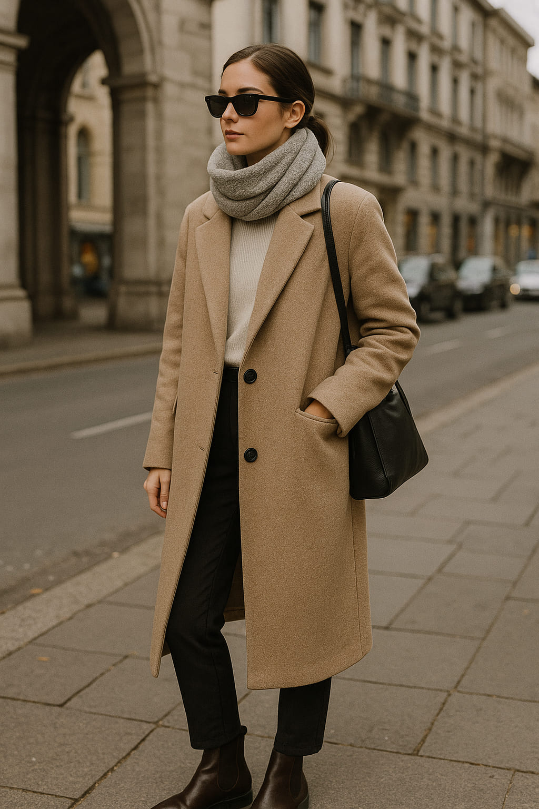
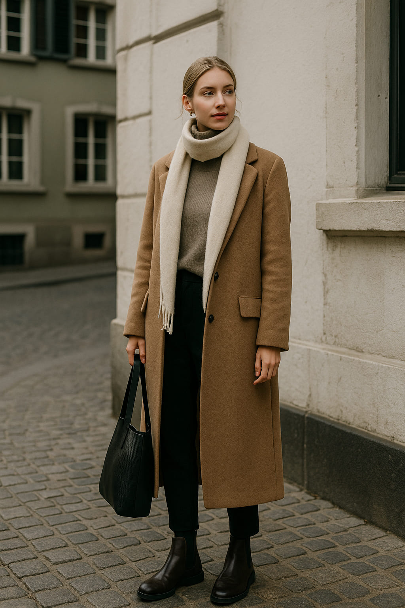

Zurich Layers: Cold-Season Looks from the Most Stylish Swiss City
Zurich is not just Switzerland’s financial powerhouse — it’s a fashion capital in disguise. As the winter chill settles over the Limmat River, locals embrace a wardrobe that is as functional as it is effortlessly elegant. The city’s style codes revolve around high-quality basics, luxurious textures, and a quiet sophistication that speaks volumes without shouting. Welcome to a cold-season masterclass in urban dressing.
“Zurich doesn’t chase trends — it refines them.”
From Bahnhofstrasse to the artsy lanes of Kreis 4, the city pulses with understated fashion moments. The layering game here is serious: think merino wool, tailored coats, and boots that whisper "old money" instead of flaunting logos. Today on Style Atlas, we unpack 3 core looks you’ll spot on Zurich’s most stylish — and how to recreate them from wherever you are.
Look #1: The Merino Minimalist
This look starts with a simple but luxurious base: a high-quality merino wool turtleneck. Worn solo or under an oversized blazer, this staple is beloved by Zurich locals who know that elegance is built from the inside out. The texture is soft, breathable, and warm — the holy trinity of winter fashion.
Pair it with tailored trousers in charcoal or deep navy, and you’re already channeling that Swiss precision. Accessories? Minimal. Maybe a slim watch or a single silver ring. Zurich style doesn’t beg for attention — it earns it through consistency and detail.
Look #2: The Tailored Neutral
Strolling through Zürich’s Old Town, you’ll notice a common thread: neutral-toned coats that look straight out of a Max Mara campaign. The Swiss adore wool-blend outerwear — tailored, minimalist, and in hues of camel, stone or dove grey. These coats are the visual equivalent of a deep breath: calm, composed, timeless.
Whether layered over a hoodie for a high-low mix or paired with a cashmere scarf and leather gloves, this outerwear piece delivers warmth and edge in equal parts. Bonus points if the silhouette is structured and hits just above the knee — Zurich’s favorite length for navigating snow-dusted sidewalks in style.
“Zurich fashion is all about heritage meeting innovation — it’s subtle, but never boring.”
Look #3: The Polished Boot Game
Let’s talk footwear. Zurich’s streets are pristine, its fashion sharper — and nothing ruins an outfit faster than clunky shoes. Enter the leather Chelsea boot: minimalist, waterproof, and built for winter urban elegance. It’s the ultimate unisex piece, seen on art students and bankers alike.
Choose pairs with clean lines, matte or slightly glossy finishes, and subtle elastic sides. Worn with wool socks and cropped trousers or tucked-in straight jeans, these boots transform cold mornings into confident moments. They’re not loud — they’re enduring.
“Zurich fashion doesn’t compete — it curates. Each piece is deliberate, designed for comfort, silence, and beauty.”
External Style Insight: According to Monocle Magazine, Zurich ranks among the world’s top cities for “quiet luxury,” a trend defined by investment pieces, subtle design, and refined confidence. “Zurich’s style is rooted in precision and purpose — the city has mastered the art of looking expensive without being ostentatious.”
Final Layer
If you’re seeking outfit inspiration with soul and sophistication, Zurich delivers. This isn’t the city for fast fashion or gimmicks. Instead, you’ll find intentional elegance, functionality disguised as flair, and a wardrobe that whispers wealth. Build your winter closet the Zurich way — start with quality, stick to the neutrals, and never underestimate the power of a good coat and great boots.
Words by Style Atlas